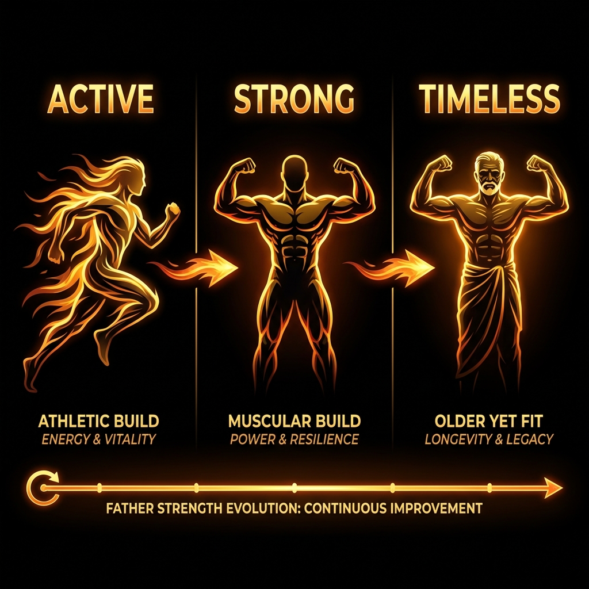

A step-by-step guide to transforming your life.
From Day 1 to Day 10,000.
Go to Tools > Macro Calculator. Enter your height, weight, age, and goal. Get your numbers. This is your GPS coordinates.
Go to Nutrition. Choose Cutting (Fat Loss) or Bulking (Muscle Gain). Eat the foods listed to hit your numbers.
Go to Training. Follow the Push-Pull-Legs routine. Log your weights. Focus on getting stronger every week.
Use the Progress Tracker. Weigh yourself daily. Adjust your calories if weight stops moving.
What happens to your body when you follow the Surya Diet system consistently.
Less Bloating, Better Sleep.
Your gut heals from processed food. Water retention drops (you look leaner). Energy levels stabilize as blood sugar regulates.
Clothes Fit Better. Strength Up.
You've adapted to the routine. Early strength gains (neurological). You wake up feeling sharp, not groggy.
Visible Transformation.
Friends notice. If cutting, abs show outline. If bulking, shirts are tight locally. Testosterone levels naturally rise.
Complete Recomposition.
You are a different person. Metabolic rate is higher. You can eat more without getting fat. Strength is 50% higher than day 1.
Anti-Aging.
While peers gain a "dad bod", you look 10 years younger. Bone density is maximum. Joint pain is non-existent due to mobility work.
Surya Diet.
You are the strong grandfather who lifts grandkids effortlessly. No pills. No walkers. Just vitality until the very end.